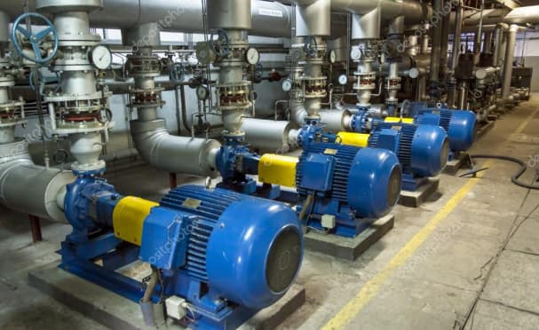

Лендинг компании Энерго инжиниринг груп
О нас
Инженерные услуги любой сложности
EPC/M-контрактор
Статистика
- 11 лет
- на рынке инжиниринговых услуг
- Более 300
- успешно выполненных контрактов
- до 5 лет
- гарантии на выполненные работы
Наши услуги
Техническое перевооружение и реконструкция
Инжиниринг
EEGroup предлагает комплексные инжиниринговые решения на рынке строительства и модернизации энергообъектов и предприятий различных отраслей.
Одним из важных моментов в достижении поставленных задач, является оптимизация стоимости, условий расчетов, сроков реализации и использования основного оборудования.
Все работы по проектированию выполняются квалифицированными сотрудниками с привлечением ведущих проектных и научно-исследовательских организаций.
Добиться этого помогает в том числе развитая система партнерской кооперации с поставщиками оборудования и материалов и совместная деятельность с крупнейшими специализированными строительно-монтажными компаниями Российской Федерации.
Мы предлагаем:
разработку технических заданий на выполнение проектно-изыскательских работ;
разработку полного комплекса проектно-сметной документации;
согласование выполненных проектов в государственных и инспектирующих органах.
Продукция
Развитая дистрибьюторская сеть и эффективное управление логистикой позволяет нам профессионально осуществлять комплектацию и поставки от ведущих российских и мировых производителей.
Мы осуществляем поставки энергетического и электротехнического оборудования, материалов и запасных частей следующих производителей:
Тепловая изоляция
Тепловая изоляция имеет высокую термостойкость, она поможет защитить элементы конструкции от конденсата, сохранить тепло, избежать промерзания и не допустить появления коррозии. Тепловая изоляция оборудования и трубопроводов повышает устойчивость к вибрациям и деформациям, имеет шлакоустойчивость и химическую стойкость к воздействию кислот и щелочей, что позволит обеспечить долгий срок работы конструкций.
Каталоги партнеровМеталлопрокат
Металлопрокат – это продукция, получаемая путем горячей, теплой или холодной прокатки из разных металлов и сплавов.
Каталоги партнеров
Мы работаем с лучшими поставщиками высококачественного металлопроката и стальных труб для строительства. Вся продукция соответствует сертификатам.
Для вас доступен широкий выбор металлопроката, труб и трубопроводной арматуры для строительства объектов любой сложности.Запорно-регулирующая арматура
Запорно-регулирующая арматура — один из важнейших элементов, предназначенных для регулирования параметров рабочей среды, а также перекрытия ее подачи, она позволяет управлять потоками транспортируемых материалов.
Каталоги партнеров
Благодаря большому выбору запорно-регулируемой арматуры, производимой нашими партнерами, мы поможем выбрать изделия, отвечающие всем требованиям вашего объекта.Котельное и теплообменное оборудование
Теплообменное и котельное оборудование должно отвечать всем требованиям ГОСТа, ТУ и других нормативов, поскольку от его качества зависит работа многих частей системы. Наши партнеры предлагают широкий выбор продукции и элементов для котельного и теплообменного оборудования.
Каталоги партнеровЭлектротехническое оборудование
Для любого предприятия необходимо грамотно подобрать электротехническое оборудование, которое будет технологичным и проверенным на практике. Основные требования к электротехническому оборудованию — соответствие всем правилам безопасности и гарантия качественного функционирования систем.
Каталоги партнеров
Мы поможем определиться с тем, какое электротехническое оборудование стоит выбрать для вашего объекта.Насосное оборудование
Насосное оборудование отвечает за перемещение и создание напора жидкостей.
Каталоги партнеров
Существует большое количество насосов и насосных агрегатов, состоящих из комплекса устройств, которые позволяют решить все задачи для обеспечения качественной работы водоснабжения, отопления, канализации и водоотведения.
Наши поставщики предлагают множество вариантов насосного оборудования для предприятий любого масштаба.
Наши проекты
Строительно-монтажные работы
Кармановская ГРЭС филиал ООО «БГК»
Модернизация ЩПТ блока № 6 с заменой аккумуляторной батареи и внедрением УТСП
Ново-Стерлитамакская ТЭЦ производственная площадка Стерлитамакской ТЭЦ
Выполнение работ по модернизации оборудования ЗРУ-110 кВ c заменой маслонаполненных линейных проходных вводов 110 кВ типа ГБМЛПУ-110/1000У1 на ввода с твёрдой изоляцией (39 ед.)
Филиал ПАО «Квадра»-«Воронежская генерация»
Выполнение строительно-монтажных работ по техническому перевооружению электротехнического оборудования котельных (1 этап)
Выполнение строительно-монтажных работ по техническому перевооружению оборудования химводоподготовки, восстановлению деаэрации (1 этап)
ООО «Фарм Констракшен» (Нижегородская область, Ардатовский район, поселок Идеал)
Выполнение строительно-монтажных работ по монтажу наружного освещения (материалы Подрядчика). Площадка Карантинник 1 (10), Доращивание 3 (30), Откорм 4 (40), Лагуны 5 (50), Убойно-санитарный пункт 6 (60) на объекте: Свиноводческий комплекс на 6 000 основных свиноматок полного цикла
Выполнение строительно-монтажных работ с материалами подрядчика по монтажу наружного электроосвещения. Площадка 9 (90) «Водоподготовка» на объекте: Свиноводческий комплекс на 6 000 основных свиноматок полного цикла.
Проектирование и строительство временного электроснабжения строительной площадки объекта: Предприятие по убою и первичной переработке свинины свиноводческих комплексов РБПИ Групп»ЗАО «Энерго Групп» (г. Нижний Новгород)
Пуско-наладочные работы по комплексному испытанию трансформатора ТДН 40000/110/6, проверка релейной защиты и автоматики фидера Т-1 110кВ, проверка релейной защиты и автоматики фидера Т1 6кВ
2021
ПАО «ОГК-2» - Киришская ГРЭС
Сервисное обслуживание трансформатора Т-61 с заменой вводов Монтаж трансформатора ТСЗП-6300/20В У3
Филиал ПАО «Квадра»-«Воронежская генерация»
Выполнение работ по разработке проекта технического перевооружения оборудования химводоподготовки, восстановлению деаэрации
ТЭЦ-16 филиал ПАО «Мосэнерго»
Выполнение строительно-монтажных работ по техническому перевооружению электротехнического оборудования котельных (1 этап)
СМР и ПНР с поставкой вспомогательного оборудования по объекту: «Установка РОУ 130/13»
АО «Омск РТС»
Сервисное обслуживание ПТК ЛСУ
2020
Филиал «Верхнетагильская ГРЭС» АО «ИНТЕР РАО – Электрогенерация»
Разработка и реализация проекта по перекладке надземных тепловых сетей
ООО «БашРТС»
Комплекс работ (проектно-изыскательские работы,, поставка, СМР и ПНР) по внедрению вакуумного деаэратора КЦ-1 Комплекс работ (проектно-изыскательские работы, поставка, СМР и ПНР) по внедрению вакуумного деаэратора КЦ-8
Филиал «Южноуральская ГРЭС» АО «Интер РАО-Электрогенерация»
Выполнение работ по модернизации котлоагрегатов ст.№4-13 с установкой автоматических клапанов на паропроводы пожаротушения пылеприготовительных установок
Выполнение работ по внедрению сигнализации на бункерах сырого угля в котельном отделении не блочной части КТЦ
Внедрение схем обеспечения живучести станции по электротехнической части
Уфимская ТЭЦ-2 ООО «БГК»
Выполнение работ по техническому перевооружению трансформаторных вводов 220 кВ трансформаторов 7 ГТ и 8 ГТ
СП «ТЭЦ – 3» АО «ТГК-11»
Модернизация (поставка, СМР, ПНР) деаэрационно-подпиточной установки СП ТЭЦ-3
Филиал «Каширская ГРЭС» АО «ИНТЕР РАО – Электрогенерация»
Капитальный ремонт светоограждения дымовой трубы № 2